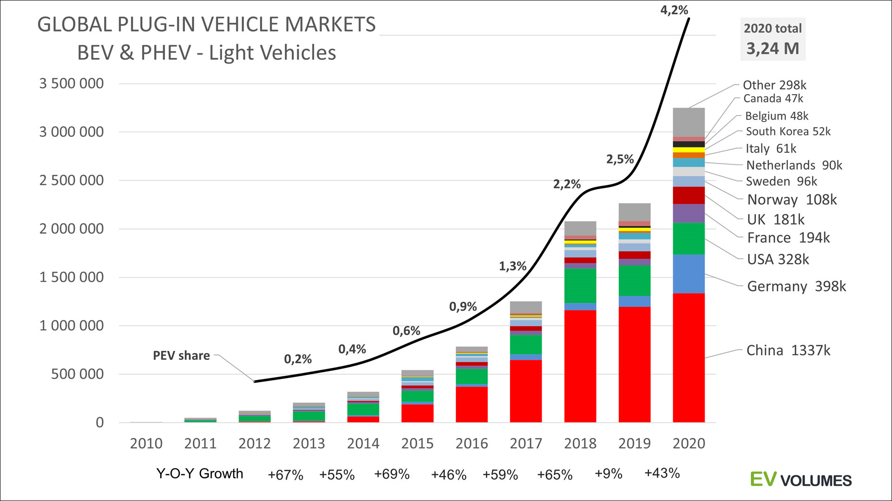

На мировой рынок стремительно выходят электромобили. Их успех открывает большие возможности для декарбонизации транспортного сектора, улучшение экологической обстановки в мире. В 2018 году был зафиксирован рекордный показатель объем продаж электрокаров в мире — 2,1 млн. По оценкам экспертов к 2030 г. объем продаж электромобилей может достичь 27 млн. единиц, что в свою очередь увеличит спрос на электро-заправочные станции.
Рис. 1. Динамика продаж классических и электромобилей 2015–2020 г
Также в России активно развивается сеть общественного транспорта на экологичном топливе: в феврале 2019 года мэр Москвы С. С. Собянин на своей пресс-конференции сказал, что в Москве с 2021 года будут закупать только электробусы [2]. Тут возникает вопрос об оснащенности автобусных парков и депо электрозаправками и оборудованием для зарядки и обслуживания электробусов. Москва заключила контракт с ПАО «КамАЗ» на поставку 100 электробусов и 36 ултьтрабыстрых зарядных станций к ним. На данный момент Москва является лидером в Европе по количеству электробусов на городских маршрутах — 281 электробус. В 2021 года это количество будет от 600 до 800 единиц в год.
В ходе международных исследований установлено, что продажи электрокаров быстрее всего растут в регионах с высоким доходом и легким доступом к инфраструктурам тарификации. В ходе опросов выявил наиболее важные причины, по которым европейские клиенты не могут покупать электрокары [3]. Чаще всего назывались две причины: небольшой диапазон выбора и отсутствие государственных инфраструктур тарификации. Обследование в Латвии выявило отсутствие инфраструктуры зарядки и высокие затраты в качестве основных барьеров, препятствующих использованию электромобилей [4]. Подводя итог, можно сказать, что наличие общественной инфраструктуры зарядки является ключевым фактором для прогресса электрической мобильности. Различные исследования и свидетельствуют о том, что отсутствие государственной инфраструктуры наряду с нынешними высокими издержками являются основными препятствиями на пути к массовому внедрению электрокаров.
Увеличивающийся спрос на легковой и общественный электротранспорт привел к тому, что предприятия начали внедрять новые концепции инфраструктуры для электрокаров, которое позволят покрывать текущие потребности людей. На сегодняшний день в Москве станции подзарядки представлены в виде станций ультрабыстрой подзарядки (6–10 минут), подзарядки в депо (3–14 часов), динамической подзарядки — для общественного транспорта и концепцией станций быстрой подзарядки — для легкового и общественного транспорта [5] С учетом перспективы дальнейшего развития сферы электромобилей и следует заранее рассматривать возрастающие мощности зарядных станций.
Уменьшение времени зарядки позволяет повысить эффективность системы зарядных станций путем сокращения времени ожидания окончания заряда, уменьшения необходимого количества точек подключения и как следствие уменьшения необходимого места для организации пунктов заряда. Сокращение времени при быстром заряде до 30 минут, позволяет эффективно использовать «точечные» пункты заряда с минимальным количеством занимаемого места и максимальной пропускной способностью и напротив — «медленные» зарядные станции с временем заряда 5–10 часов не требуют больших пиковых мощностей при эксплуатации и больше подходят для установки в местах длительной стоянки автомобилей.
| Медленная зарядка | Быстрая зарядка |
| +Меньшая стоимость зарядки | -Высокая стоимость зарядки |
| -Меньше пиковая стоимость | +Выше пиковая мощность |
| -Долгий процесс зарядки | +Зарядка автомобиля за 30мин. |
| -Установка только в местах длительной стоянки | +Возможна установка в краткосрочных стоянках |
Разрешением вопросов связанных с выделением больших мощностей для организации пунктов быстрого заряда является использование существующей сети тяговых подстанций как площадки для развертывания пунктов заряда. Наличие нужных резервов мощности, распределение по всей территории города, существующая служба обслуживающего персонала, а так же размещение рядом с основными маршрутами пассажирского транспорта являются ключевыми факторами в определении стратегии формирования городской сети станций быстрого заряда для электромобильного транспорта.